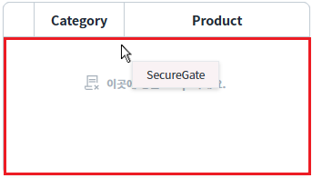
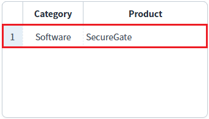
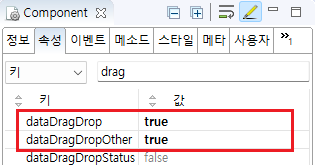

[GridView] 마우스 DragDrop 기능을 통한 GridView 내 행의 이동 금지 설정하기
1개요
GridView의 'dataDragDropOther' 속성를 'true'로 설정하여, 행 데이터를 마우스로 드래그-앤-드롭하여 GridView 내부에서 이동하지 못하도록 설정한 예제입니다.
2구현된 기능
DragDrop 설정 + GridVIew 내 행 이동 금지
3예제 테스트 방법
3.1GridView내 드래그 앤 드롭으로 행 이동 금지
GridView 내의 행을 드래그하여 GridView 내에서 드롭했을 때, 드래그한 행이 이동되지 않는 것을 확인합니다.
1
STEP 1: GridView의 첫 번째 행, "Product" 열을 드래그합니다.
Image 1.브라우저(Chrome) 실행 예시

2
STEP 2: GridView의 세 번째 행에서 드롭합니다.
Image 2.브라우저(Chrome) 실행 예시

3
STEP 3: 실행 결과를 확인합니다.
행이 이동되지 않습니다.
3.2다른 GridView에 드래그 앤 드롭으로 행 이동
1
STEP 1: GridView의 첫 번째 행, "Product" 열을 드래그합니다.
Image 3.브라우저(Chrome) 실행 예시
2
STEP 2: 예제 영역 '행 이동 테스트용 GridView'의 GridView 위에서 드롭합니다.
Image 4.브라우저(Chrome) 실행 예시

3
STEP 3: 실행 결과를 확인합니다.
행이 이동됩니다.
Image 5.브라우저(Chrome) 실행 예시

4구현 예시
GridView와 연결된 DataList 생성 및 연결 방법은 생략되었습니다.
4.1GridView내 드래그 앤 드롭으로 행 이동 금지 설정하기
GridView의 속성을 정의합니다.
[필수] dataDragDrop="true"
[default:false, true] 동일 gridView 또는 서로 다른 gridView 간의 데이터 드래그 앤 드롭을 허용
[필수] dataDragDropOther="true"
[default:false, true] 서로 다른 gridView 간의 데이터 드래그 앤 드롭만 허용할지 여부
Image 6.웹스퀘어 스튜디오의 Component View - 속성 설정 예시

Example 1.Source
<!-- gridView 의 소스 본문 예시 --> <w2:gridView dataDragDrop="true" dataDragDropOther="true" dataList="data:dlt_exam_1"> <!-- 중략 --> </w2:gridView>
5주요 API
dataDragDrop
dataDragDropOther